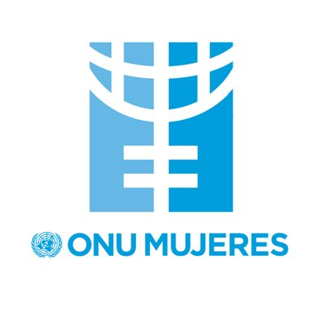

<ion-header>
  <ion-toolbar>
      <ion-buttons slot="start">
          <ion-back-button icon="arrow-back" defaultHref="/list" text=""></ion-back-button>
        </ion-buttons>
    <ion-title>Twitter</ion-title>
  </ion-toolbar>
</ion-header>

<ion-content>
      <ion-content>
          <ion-card>
            
              <ion-card-header>
                <ion-card-subtitle>@ONUMujeres</ion-card-subtitle>
                <ion-card-title>ONU Mujeres</ion-card-title>
              </ion-card-header>
            
              <ion-card-content>
                ONU Mujeres es la agencia de las Naciones Unidas para la igualdad 
                de género y el empoderamiento de las mujeres.
              </ion-card-content>
              <ion-button (click)="OnuMujeres()" expand="full">Ir a Twitter</ion-button>
            </ion-card>
      
                <ion-button (click)="Back()" expand="full">Regresar</ion-button>
            
      </ion-content>
      
      
</ion-content>
